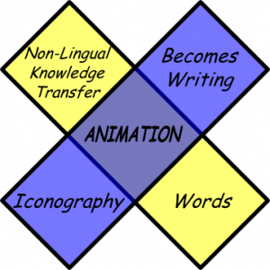
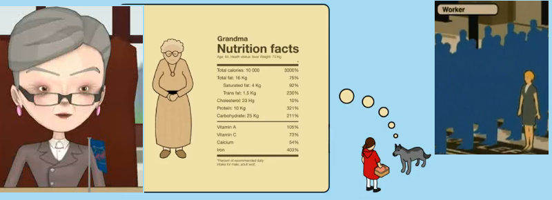

Marshall McLuhan would be a very spry 100 by now, and in honor of that centennial, I thought I’d dig up an old tetrad I built, try to explain it in a little more detail, and then focus on what I see as evidence of its accuracy.

First, by animation I mean dynamic and interactive content that is abstractly represented. So, not traditional cinema and, really in my mind, not modern CGI cinema. Instead, I’m thinking of what is generally termed infographics.* Typically in such animation, real-life objects are rendered in a cartoon style, such that a human being is one of a number of different simultaneously exaggerated and simplified renditions of the formal thing known as “a person”.

From left to right: a humanities professor from "So you Want to Get a PhD in the Humanities"; grandma, Little Red Riding Hood and the wolf from Slagsmålsklubben by Tomas Nilsson; unkown woman and a herd of workers from Royksopp's Remind Me.
Along with cartoon representations of Volkswagens and picnic baskets comes the display of data as flow, quantity, network or map in a variety of manners. The growth in information visualization tools, libraries and literature is overwhelming. JIT, D3 and paper.js are just a few currently popular javascript infoviz libraries. Many trace their origins to Prefuse, which itself is based on Ed Chi’s data state model that describes a few primary stages, transformations and operators, which can be used to provide a framework for packaging and processing to allow for generic visualization libraries, like those above, or tools like ManyEyes, Tableau, Fusion Tables or Data Wrangler. Combined, we can see a new visual language to which earlier spoken and written narratives can be translated into.
You’ll notice in Little Red Riding Hood that the iconography is entirely modern, and that while there are still words, they operate many times not as language but as markers to better describe some abstract concept (Like pain medication). Throughout the video there is revealed an entire corpus of diagrammatic lexis that we all understand: nutritional facts, geological strata, cutaways for explaining mechanical processes, force arrows, &c &c.
So, to return to my tetrad, with an acknowledgement that animation is not the right word to describe this class, though neither is visualization, infographic or diagram:
- Animation retrieves iconography by providing knowledge creators and acquirers the ability to interact without need for alphabetic or phonobetic literacy. Animation, just as medieval iconography, allows for the expression of concepts using only images.
- Animation obsolesces words by affording dynamic and interactive exploration of visualized data forms. The new Computable Document Format acknowledges this capability and attempts to give it equal footing with traditional linear narrative. A static image, even one as complex as found in nomography, has a hard time competing with complex linear narratives in the realm of knowledge delivery, but interactive and dynamic images afford a more sophisticated engagement with knowledge objects. I think there’s an intuitive sense of this last point and that’s why so much energy is being spent developing information visualization tools.
- Animation affords non-lingual transfer of knowledge by providing writer and reader with concepts, objects and structures that are recognizable without traditional literacy. Imagine if you had a schematic, cartographic and diagrammatic library of every object, concept and structure known to science, engineering, literature and philosophy and think of how useful that would prove to the entire world without translation.
- Animation flips to become a new form of writing with all the pitfalls and benefits of writing. Calls to address information and data literacy already support this point. Taking advantage of this illiteracy–whether with cartoons, maps or diagrams–has been explored by the likes of Tufte and Monmonier. Lev Manovich recently claimed that the creative energy of the age was directed toward tools and not toward their use, but this could also be seen as a shift from using tools to create linear narrative output to the tools themselves as being dynamic formal input.
This has driven my interest in a certain subset of interactive gaming and the post mortems and theory written about it by game designers, because I see it as a much more mature version of this new media than the information visualization field. Boing Boing has an excellent essay by the Superbrothers about the strength and promise of gaming as a form of communication. They even take on the alphabet:
Remember when Miyamoto made that videogame about those plumbers? The real revolution with that videogame was in the style of communication. It was a tremendous leap forward in how articulate synesthetic audiovisual could be. Coins looked like they sounded and they sounded the way they behaved in the context of the mechanics. Each element — the brick, the turtle, the pipe — was a well-formed, understandable audiovisual videogame unit.
That’s the genius of this thing. It didn’t need to talk much at all, it was pure rock. This was the native language of videogames: synesthetic audiovisual expressing a meaning, where sound and image and logic come together and feel right, where the communication is nonverbal but nonetheless articulate, where you understand what’s going on the same way you ‘get’ the communication of a song, the same way you can be blown away by a painting or a piece of sculpture.
Maybe television was like radio in that it was constantly present. If so, then perhaps animation is unlike television in that it is constantly waiting. Interactive visualizations, games, simulations and even linear but animated infographic versions of Little Red Riding Hood are not always running without us. Quite the opposite. They wait for us, to click play or press the X-button or tweak a variable. If that’s the case, then maybe that’s why we’re constantly building, because building is interacting is engaging with this form of media.